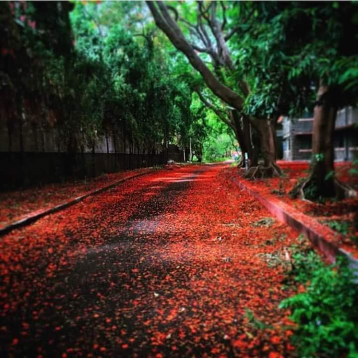

मे महिन्याचं कडक दुपारचं ऊन..वरती पंखा घामाघूम होत फिरतोय...जीवाची काहिली काहिली होते आहे...ऊष्ण झळा अंगाखांद्यावर जाणवत आहेत...जरा आळसावून खिडकीबाहेर नजर टाकली...आजूबाजूच्या झाडांमुळे नाही म्हणायला डोळ्यांना थोडातरी गारवा मिळतो आहे...टक लावून बघता बघता त्या सगळ्या हिरवाईमध्ये एक लालबुंद तरारलेले गुलमोहोराचे झाड मात्र चांगलेच लक्ष वेधून घेत होते...पहावे तिकडे नुसती फुलेच फुले...अत्यंत तेजस्वी दिमाखदार लाल रंग..!! नजर खाली गेली आणि तसाच जमिनीवर लाल रंगाचा गालिचाच अंथरलेला दिसला..!! अहाहा..!! एक फूल निसटलं वरून आणि तरंगत तरंगत खाली येवू लागलं...त्याचा पाठलाग करता करता मन ही भूतकाळाचा पाठलाग करू लागलं.........
मेडिकलला प्रवेश मिळाला आणि बरेच दिवस वाट बघून महत्प्रयासाने शेवटी लेडिज होस्टेलला रहायला जागा मिळाली..कित्येक यशस्वी डाॅक्टर्स घडविणार्या या वास्तूत स्थिरस्थावर झाल्यावर जरा आजूबाजूला बाकी गोष्टी निरखायला उसंत मिळाली..रोज सकाळी स्वच्छ एप्रन घालून गडबडीत काॅलेजमध्ये जातांना फारसं लक्षात येत नसे पण हळूहळू रोजच्या पायाखालच्या आणि सर्वांना सामावून घेणार्या रस्त्याशी मात्र चांगलीच दोस्ती व्हायला लागली...होस्टेलसमोरचा वाहता रस्ता ओलांडला की गोलाकार छोटा लोखंडी दरवाजा लागत असे...तिथूनच हा रस्ता सुरू होत असे...थोडासा नागमोडी, बेताचाच रूंद आणि दोन्ही बाजूंनी भरगच्च गुलमोहोराच्या झाडांनी सजलेला हा रस्ता जणू सर्वांशीच हितगुज करीत असल्यासारखा भासे..!
कसंबसं उठून, भराभर बाथरूमला नंबर लावून केवळ एका बादलीत अंघोळ उरकून रोज आवरायचं...दूध अर्धमूर्ध॔ तापवून प्यायचं आणि एप्रन खांद्यावर टाकून लेक्चर वेळेत गाठण्यासाठी धावत सुटायचं...प्रत्येक जण आपल्याच तंद्रीत...नवीनच रूजू झालेल्या मुली केसांना झटके देत, जरा जास्तच मोठ्याने हसत बोलत असत तर काही लाजत बुजत खालच्या मानेने चालत असत...वेगवेगळ्या रंगांची उधळण करीत देशी काही विदेशी अश्या सार्याच कपड्यांची सरमिसळ असे..त्याच गर्दीत थोड्या सिनियर, अनुभवाचे चार पावसाळे जास्त पाहिलेल्या मुली तुच्छतेने या नवीन पाखरांकडे कटाक्ष टाकीत पोक्तपणे दमदार चालत असत...जेव्हा जेव्हा रस्त्याकडे नजर जाई तेव्हा असं वाटे तो जणू विचारतोय..."काही खावून घेतलंस ना?चार पाच तास काढायचे आहेत...शक्ती जपून ठेव...काळजी घे..!!"
या रस्त्याला जाग असे सकाळी ...जेव्हा सारे नुसते पळत..!! त्याला पुनश्च जाग येई दुपारी..अगदी टकटकीत..! आता मात्र तहानलेले, भुकेले, कावलेले आणि वैतागलेले चेहेरे पाहिले की ह्याच्याच पोटात कालवाकालव होई..! सगळ्यांना जेवणाची ओढ लागलेली असे..दुपारी छान टवटवीत होऊन हा जथ्था काॅलेजकडे निघाला की ह्याला निवांतपणा लाभे..! त्याला लागूनच असणार्या बिल्डींगमधले भावी डाॅक्टर मित्रही आता चंगलेच ताजेतवाने असत...'ती'आली म्हणून खुशीत मारलेली शीळ ऐकून रस्ता गालातल्या गालात हसत असे.."अरेच्च्या !ही आहे तर..!"जणू त्याचं सिक्रेट कळल्यासारखा खूश होत असे...!मुलांच्या शिट्ट्या ऐकून मोहरलेली 'ती' बघून रस्ताही मोहरून जात असे..! उगीचच पापण्यांची फडफड,तिरपे कटाक्ष आणि हातांनी केलेला केसांचा चाळा बघून जणू त्यालाच ह्लदयाची धडधड वाढल्यासारखी वाटे!कुणाचेतरी गालावर ओघळलेले वाळलेले अश्रू बघून त्याला आतून खूप भरून येत असे.."आई बाबांची आठवण येत असेल का? मी इथे आहे उभा पण तिची काळजी कशी घेवू?" या विचाराने रस्ता कासावीस होऊन जात असे...चालता चालता घरून आलेलं पत्र वाचणार्या त्या कन्येचा फुललेला चेहरा पाहून त्याला होणारा आनंद कुठे कुठे वाटू असं होऊन जाई..!
पाठीवर मणामणाचं पुस्तकांचं ओझं वाहणार्या सुकुमार मुली पाहून तो स्वतःच गलितगात्र होऊन जात असे...कसं हे सगळं निभावणार म्हणून खंतावून जात असे..! मुली एकदा होस्टेलला गेल्या की मात्र तो आळसावून समाधी लावून बसे..नाही म्हणायला एखाद दुसरी लायब्ररीत अथवा स्पेशल मित्राला भेटण्यासाठी येत असे पण ते विरळाच..!हळूहळू त्याची दोस्तमंडळीही आपापला अभ्यास करण्यात दंग होऊन जाई..उभ्याउभ्याच डोळे मिटून रस्ता उद्याची वाट पाहत राही..!
मुलींच्या चिवचिवाटात ,नाजूक किनकिनाटात दिवस असे भराभर जात असतांनाच मध्येच एक आक्रीत घडले..रस्त्याच्याच एका हळव्या दोस्ताला हा सारा ताण सहन नाही झाला...अन् कुठल्याशा अभद्र क्षणी गळफास घेवून जीवच संपवून टाकला...हुंदके देवून देवून अश्रू ढाळणार्या रस्त्याला त्या थरथरणार्या भितीयुक्त नजरा पाहवल्या नाही..कुजबूज सहन झाली नाही..!!..खूप दिवस खिन्न असणारा हा रस्ता मग शेजारच्या बालवाडीतून भेटायला येणार्या बच्चेकंपनीमध्ये आनंद शोधायचा प्रयत्न करीत होता..!!त्याला ठावूक होतं..ह्या वर एकच उपाय..काळ !!
हिवाळा सरला...पानगळही आता थांबली..वसंत ऋतूची चाहूल लागतली...रस्याही सर्व काही विसरून निसर्गाचे दान घ्यायला नव्याने सज्ज झाला..! हारीने ऊभे असलेले गुलमोहोर एक एक छटा दाखवायला लागले....आणि बघता बघता रस्ता दोन्ही बाजूंनी लालबुंद होऊन गेला...येणारे सूर्यकिरणही त्या रंगात न्हावून निघाले...फुलांचा सडा खाली पडू लागला आणि रस्ता पुन्हा त्याच्या जोशात आला....खाली अंथरलेला लाल गालिचा नाजूक पावलांची पुन्हा वाट पाहू लागला...हा आमचा "राजपथ"...केवळ आमचाच राजपथ...!!!!!